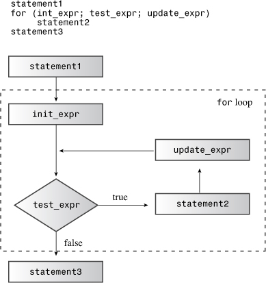
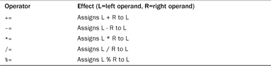
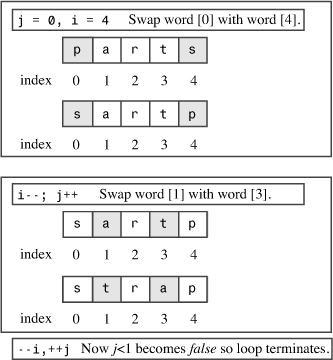
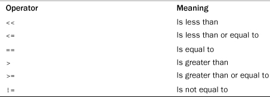
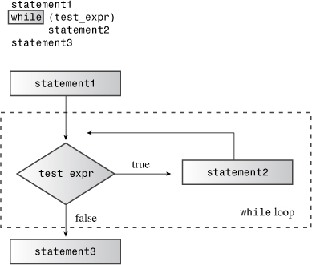
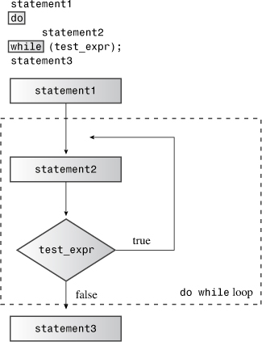
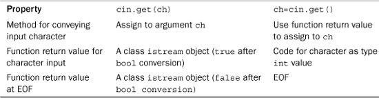
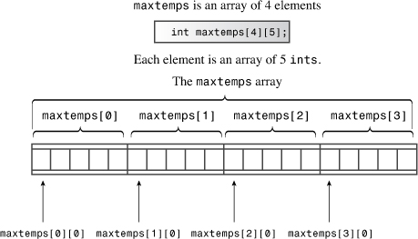
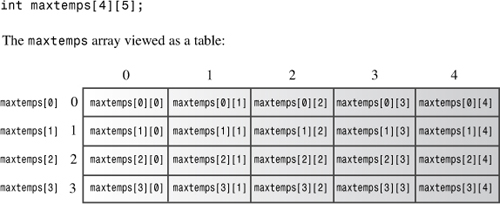

In this chapter you’ll learn about the following:
• The for loop
• Expressions and statements
• The increment and decrement operators: ++ and --
• Combination assignment operators
• Compound statements (blocks)
• The comma operator
• Relational operators: >, >=, ==, <=, <, and !=
• The while loop
• The typedef facility
• The do while loop
• The get() character input method
• The end-of-file condition
• Nested loops and two-dimensional arrays
Computers do more than store data. They analyze, consolidate, rearrange, extract, modify, extrapolate, synthesize, and otherwise manipulate data. Sometimes they even distort and trash data, but we’ll try to steer clear of that kind of behavior. To perform their manipulative miracles, programs need tools for performing repetitive actions and for making decisions. Of course, C++ provides such tools. Indeed, it uses the same for loops, while loops, do while loops, if statements, and switch statements that regular C employs, so if you know C, you can zip through this chapter and Chapter 6, “Branching Statements and Logical Operators.” (But don’t zip too fast—you don’t want to miss how cin handles character input!) These various program control statements often use relational expressions and logical expressions to govern their behavior. This chapter discusses loops and relational expressions, and Chapter 6 follows up with branching statements and logical expressions.
for LoopsCircumstances often call on a program to perform repetitive tasks, such as adding together the elements of an array one by one or printing some paean to productivity 20 times. The C++ for loop makes such tasks easy to do. Let’s look at a loop in Listing 5.1, see what it does, and then discuss how it works.
// forloop.cpp -- introducing the for loop
#include <iostream>
int main()
{
using namespace std;
int i; // create a counter
// initialize; test ; update
for (i = 0; i < 5; i++)
cout << "C++ knows loops.\n";
cout << "C++ knows when to stop.\n";
return 0;
}
Here is the output from the program in Listing 5.1:
C++ knows loops.
C++ knows loops.
C++ knows loops.
C++ knows loops.
C++ knows loops.
C++ knows when to stop.
This loop begins by setting the integer i to 0:
i = 0
This is the loop initialization part of the loop. Then in the loop test, the program tests whether i is less than 5:
i < 5
If it is, the program executes the following statement, which is termed the loop body:
cout << "C++ knows loops.\n";
Then the program uses the loop update part of the loop to increase i by 1:
i++
The loop update part of the loop uses the ++ operator, called the increment operator. It increments the value of its operand by 1. (The increment operator is not restricted to for loops. For example, you can use i++; instead of i = i + 1; as a statement in a program.) Incrementing i completes the first cycle of the loop.
Next, the loop begins a new cycle by comparing the new i value with 5. Because the new value (1) is also less than 5, the loop prints another line and then finishes by incrementing i again. That sets the stage for a fresh cycle of testing, executing a statement, and updating the value of i. The process continues until the loop updates i to 5. Then the next test fails, and the program moves on to the next statement after the loop.
for LoopA for loop provides a step-by-step recipe for performing repeated actions. Let’s take a more detailed look at how it’s set up. The usual parts of a for loop handle these steps:
1. Setting a value initially
2. Performing a test to see whether the loop should continue
3. Executing the loop actions
4. Updating value(s) used for the test
The C++ loop design positions these elements so that you can spot them at a glance. The initialization, test, and update actions constitute a three-part control section enclosed in parentheses. Each part is an expression, and semicolons separate the expressions from each other. The statement following the control section is called the body of the loop, and it is executed as long as the test expression remains true:
for (initialization; test-expression; update-expression)
body
C++ syntax counts a complete for statement as a single statement, even though it can incorporate one or more statements in the body portion. (Having more than one statement requires using a compound statement, or block, as discussed later in this chapter.)
The loop performs initialization just once. Typically, programs use this expression to set a variable to a starting value and then use the variable to count loop cycles.
test-expression determines whether the loop body gets executed. Typically, this expression is a relational expression—that is, one that compares two values. Our example compares the value of i to 5, checking whether i is less than 5. If the comparison is true, the program executes the loop body. Actually, C++ doesn’t limit test-expression to true/false comparisons. You can use any expression, and C++ will type cast it to type bool. Thus, an expression with a value of 0 is converted to the bool value false, and the loop terminates. If the expression evaluates to nonzero, it is type cast to the bool value true, and the loop continues. Listing 5.2 demonstrates this by using the expression i as the test condition. (In the update section, i-- is similar to i++ except that it decreases the value of i by 1 each time it’s used.)
// num_test.cpp -- use numeric test in for loop
#include <iostream>
int main()
{
using namespace std;
cout << "Enter the starting countdown value: ";
int limit;
cin >> limit;
int i;
for (i = limit; i; i--) // quits when i is 0
cout << "i = " << i << "\n";
cout << "Done now that i = " << i << "\n";
return 0;
}
Here is the output from the program in Listing 5.2:
Enter the starting countdown value: 4
i = 4
i = 3
i = 2
i = 1
Done now that i = 0
Note that the loop terminates when i reaches 0.
How do relational expressions, such as i < 5, fit into this framework of terminating a loop with a 0 value? Before the bool type was introduced, relational expressions evaluated to 1 if true and 0 if false. Thus, the value of the expression 3 < 5 was 1, and the value of 5 < 5 was 0. Now that C++ has added the bool type, however, relational expressions evaluate to the bool literals true and false instead of 1 and 0. This change doesn’t lead to incompatibilities, however, because a C++ program converts true and false to 1 and 0 where integer values are expected, and it converts 0 to false and nonzero to true where bool values are expected.
The for loop is an entry-condition loop. This means the test expression is evaluated before each loop cycle. The loop never executes the loop body when the test expression is false. For example, suppose you rerun the program in Listing 5.2 but give 0 as a starting value. Because the test condition fails the very first time it’s evaluated, the loop body never gets executed:
Enter the starting countdown value: 0
Done now that i = 0
This look-before-you-loop attitude can help keep a program out of trouble.
update-expression is evaluated at the end of the loop, after the body has been executed. Typically, it’s used to increase or decrease the value of the variable keeping track of the number of loop cycles. However, it can be any valid C++ expression, as can the other control expressions. This makes the for loop capable of much more than simply counting from 0 to 5, the way the first loop example does. You’ll see some examples of this later.
The for loop body consists of a single statement, but you’ll soon learn how to stretch that rule. Figure 5.1 summarizes the for loop design.
Figure 5.1. The design of for loops.

A for statement looks something like a function call because it uses a name followed by paired parentheses. However, for’s status as a C++ keyword prevents the compiler from thinking for is a function. It also prevents you from naming a function for.
Common C++ style is to place a space between for and the following parenthesis and to omit space between a function name and the following parenthesis:
for (i = 6; i < 10; i++)
smart_function(i);
Other control statements, such as if and while, are treated similarly to for. This serves to visually reinforce the distinction between a control statement and a function call. Also common practice is to indent the body of a for statement to make it stand out visually.
A for control section uses three expressions. Within its self-imposed limits of syntax, C++ is a very expressive language. Any value or any valid combination of values and operators constitute an expression. For example, 10 is an expression with the value 10 (no surprise), and 28 * 20 is an expression with the value 560. In C++ every expression has a value. Often the value is obvious. For example, the following expression is formed from two values and the addition operator, and it has the value 49:
22 + 27
Sometimes the value is less obvious. For example, the following is an expression because it’s formed from two values and the assignment operator:
x = 20
C++ defines the value of an assignment expression to be the value of the member on the left, so the expression has the value 20. The fact that assignment expressions have values permits statements such as the following:
maids = (cooks = 4) + 3;
The expression cooks = 4 has the value 4, so maids is assigned the value 7. However, just because C++ permits this behavior doesn’t mean you should encourage it. But the same rule that makes this peculiar statement possible also makes the following useful statement possible:
x = y = z = 0;
This is a fast way to set several variables to the same value. The precedence table (see Appendix D, “Operator Precedence”) reveals that assignment associates right-to-left, so first 0 is assigned to z, and then z = 0 is assigned to y, and so on.
Finally, as mentioned previously, relational expressions such as x < y evaluate to the bool values true or false. The short program in Listing 5.3 illustrates some points about expression values. The << operator has higher precedence than the operators used in the expressions, so the code uses parentheses to enforce the correct order.
// express.cpp -- values of expressions
#include <iostream>
int main()
{
using namespace std;
int x;
cout << "The expression x = 100 has the value ";
cout << (x = 100) << endl;
cout << "Now x = " << x << endl;
cout << "The expression x < 3 has the value ";
cout << (x < 3) << endl;
cout << "The expression x > 3 has the value ";
cout << (x > 3) << endl;
cout.setf(ios_base::boolalpha); //a newer C++ feature
cout << "The expression x < 3 has the value ";
cout << (x < 3) << endl;
cout << "The expression x > 3 has the value ";
cout << (x > 3) << endl;
return 0;
}
Here is the output from the program in Listing 5.3:
The expression x = 100 has the value 100
Now x = 100
The expression x < 3 has the value 0
The expression x > 3 has the value 1
The expression x < 3 has the value false
The expression x > 3 has the value true
Normally, cout converts bool values to int before displaying them, but the cout.setf(ios::boolalpha) function call sets a flag that instructs cout to display the words true and false instead of 1 and 0.
A C++ expression is a value or a combination of values and operators, and every C++ expression has a value.
To evaluate the expression x = 100, C++ must assign the value 100 to x. When the very act of evaluating an expression changes the value of data in memory, we say the evaluation has a side effect. Thus, evaluating an assignment expression has the side effect of changing the assignee’s value. You might think of assignment as the intended effect, but from the standpoint of how C++ is constructed, evaluating the expression is the primary effect. Not all expressions have side effects. For example, evaluating x + 15 calculates a new value, but it doesn’t change the value of x. But evaluating ++x + 15 does have a side effect because it involves incrementing x.
From expression to statement is a short step; you just add a semicolon. Thus, the following is an expression:
age = 100
Whereas the following is a statement:
age = 100;
More particularly, it is an expression statement. Any expression can become a statement if you add a semicolon, but the result might not make programming sense. For example, if rodents is a variable, then the following is a valid C++ statement:
rodents + 6; // valid, but useless, statement
The compiler allows it, but the statement doesn’t accomplish anything useful. The program merely calculates the sum, does nothing with it, and goes on to the next statement. (A smart compiler might even skip the statement.)
Some concepts, such as knowing the structure of a for loop, are crucial to understanding C++. But there are also relatively minor aspects of syntax that can suddenly bedevil you just when you think you understand the language. We’ll look at a couple of them now.
Although it is true that adding a semicolon to any expression makes it a statement, the reverse is not true. That is, removing a semicolon from a statement does not necessarily convert it to an expression. Of the kinds of statements we’ve used so far, return statements, declaration statements, and for statements don’t fit the statement = expression + semicolon mold. For example, this is a statement:
int toad;
But the fragment int toad is not an expression and does not have a value. This makes code such as the following invalid:
eggs = int toad * 1000; // invalid, not an expression
cin >> int toad; // can't combine declaration with cin
Similarly, you can’t assign a for loop to a variable. In the following example, the for loop is not an expression, so it has no value and you can’t assign it:
int fx = for (i = 0; i< 4; i++)
cout >> i; // not possible
C++ adds a feature to C loops that requires some artful adjustments to the for loop syntax. This was the original syntax:
for (expression; expression; expression)
statement
In particular, the control section of a for structure consisted of three expressions, as defined earlier in this chapter, separated by semicolons. C++ loops allow you do to things like the following, however:
for (int i = 0; i < 5; i++)
That is, you can declare a variable in the initialization area of a for loop. This can be convenient, but it doesn’t fit the original syntax because a declaration is not an expression. This once outlaw behavior was originally accommodated by defining a new kind of expression, the declaration-statement expression, which was a declaration stripped of the semicolon, and which could appear only in a for statement. That adjustment has been dropped, however. Instead, the syntax for the for statement has been modified to the following:
for (for-init-statement condition; expression)
statement
At first glance, this looks odd because there is just one semicolon instead of two. But that’s okay because for-init-statement is identified as a statement, and a statement has its own semicolon. As for for-init-statement, it’s identified as either an expression-statement or a declaration. This syntax rule replaces an expression followed by a semicolon with a statement, which has its own semicolon. What this boils down to is that C++ programmers want to be able to declare and initialize a variable in a for loop initialization, and they’ll do whatever is necessary to C++ syntax and to the English language to make it possible.
There’s a practical aspect to declaring a variable in for-init-statement that you should know about. Such a variable exists only within the for statement. That is, after the program leaves the loop, the variable is eliminated:
for (int i = 0; i < 5; i++)
cout << "C++ knows loops.\n";
cout << i << endl; // oops! i no longer defined
Another thing you should know is that some older C++ implementations follow an earlier rule and treat the preceding loop as if i were declared before the loop, thus making it available after the loop terminates.
for LoopLet’s be a bit more ambitious with loops. Listing 5.4 uses a loop to calculate and store the first 16 factorials. Factorials, which are handy for computing odds, are calculated the following way. Zero factorial, written as 0!, is defined to be 1. Then, 1! is 1 * 0!, or 1. Next, 2! is 2 * 1!, or 2. Then, 3! is 3 * 2!, or 6, and so on, with the factorial of each integer being the product of that integer with the preceding factorial. (One of the late pianist-comedian Victor Borge’s best-known monologues featured phonetic punctuation, in which the exclamation mark is pronounced something like phffft pptz, with a moist accent. However, in this case, “!” is pronounced “factorial.”) The program uses one loop to calculate the values of successive factorials, storing them in an array. Then it uses a second loop to display the results. Also the program introduces the use of external declarations for values.
// formore.cpp -- more looping with for
#include <iostream>
const int ArSize = 16; // example of external declaration
int main()
{
long long factorials[ArSize];
factorials[1] = factorials[0] = 1LL;
for (int i = 2; i < ArSize; i++)
factorials[i] = i * factorials[i-1];
for (int i = 0; i < ArSize; i++)
std::cout << i << "! = " << factorials[i] << std::endl;
return 0;
}
Here is the output from the program in Listing 5.4:
0! = 1
1! = 1
2! = 2
3! = 6
4! = 24
5! = 120
6! = 720
7! = 5040
8! = 40320
9! = 362880
10! = 3628800
11! = 39916800
12! = 479001600
13! = 6227020800
14! = 87178291200
15! = 1307674368000
Factorials get big fast!
This listing uses the long long type. If your system doesn’t have that type available, you can use double. However, the integer format gives a nicer visual representation of how the numbers grow larger.
The program in Listing 5.4 creates an array to hold the factorial values. Element 0 is 0!, element 1 is 1!, and so on. Because the first two factorials equal 1, the program sets the first two elements of the factorials array to 1.0. (Remember, the first element of an array has an index value of 0.) After that, the program uses a loop to set each factorial to the product of the index with the previous factorial. The loop illustrates that you can use the loop counter as a variable in the body of the loop.
The program in Listing 5.4 demonstrates how the for loop works hand-in-hand with arrays by providing a convenient means to access each array member in turn. Also formore.cpp uses const to create a symbolic representation (ArSize) for the array size. Then it uses ArSize wherever the array size comes into play, such as in the array definition and in the limits for the loops handling the array. Now, if you wish to extend the program to, say, 20 factorials, you just have to set ArSize to 20 in the program and recompile. By using a symbolic constant, you avoid having to change every occurrence of 16 to 20 individually.
It’s usually a good idea to define a const value to represent the number of elements in an array. You can use the const value in the array declaration and in all other references to the array size, such as in a for loop.
The limit expression i < ArSize reflects the fact that subscripts for an array with ArSize elements run from 0 to ArSize - 1, so the array index should stop one short of ArSize. You could use the test i <= ArSize - 1 instead, but it looks awkward in comparison.
Note that the program declares the const int variable ArSize outside the body of main(). As the end of Chapter 4, “Compound Types,” mentions, this makes ArSize external data. The two consequences of declaring ArSize in this fashion are that ArSize exists for the duration of the program and that all functions in the program file can use it. In this particular case, the program has just one function, so declaring ArSize externally has little practical effect. But multifunction programs often benefit from sharing external constants, so we’ll practice using them next.
Also this example reminds us that we can use std:: instead of a using directive to make selected standard names available.
So far the loop examples in this chapter have increased or decreased the loop counter by one in each cycle. You can change that by changing the update expression. The program in Listing 5.5, for example, increases the loop counter by a user-selected step size. Rather than use i++ as the update expression, it uses the expression i = i + by, where by is the user-selected step size.
// bigstep.cpp -- count as directed
#include <iostream>
int main()
{
using std::cout; // a using declaration
using std::cin;
using std::endl;
cout << "Enter an integer: ";
int by;
cin >> by;
cout << "Counting by " << by << "s:\n";
for (int i = 0; i < 100; i = i + by)
cout << i << endl;
return 0;
}
Here is a sample run of the program in Listing 5.5:
Enter an integer: 17
Counting by 17s:
0
17
34
51
68
85
When i reaches the value 102, the loop quits. The main point here is that the update expression can be any valid expression. For example, if you want to square i and add 10 in each cycle, you can use i = i * i + 10.
Another point to note is that it often is a better idea to test for inequality than equality. For example, the test i == 100 would have failed in this case because i skips over the value 100.
Finally, this example illustrates the use of using declarations instead of a using directive.
for LoopThe for loop provides a direct way to access each character in a string in turn. For example, Listing 5.6 enables you to enter a string and then displays the string character-by-character, in reverse order. You could use either a string class object or an array of char in this example because both allow you to use array notation to access individual characters in a string; Listing 5.6 uses a string class object. The string class size() method yields the number of characters in the string; the loop uses that value in its initializing expression to set i to the index of the last character in the string, not counting the null character. To count backward, the program uses the decrement operator (--) to decrease the array subscript by one in each loop. Also Listing 5.6 uses the greater-than-or-equal-to relational operator (>=) to test whether the loop has reached the first element. We’ll summarize all the relational operators soon.
// forstr1.cpp -- using for with a string
#include <iostream>
#include <string>
int main()
{
using namespace std;
cout << "Enter a word: ";
string word;
cin >> word;
// display letters in reverse order
for (int i = word.size() - 1; i >= 0; i--)
cout << word[i];
cout << "\nBye.\n";
return 0;
}
Here is a sample run of the program in Listing 5.6:
Enter a word: animal
lamina
Bye.
Yes, the program succeeds in printing animal backward; choosing animal as a test word more clearly illustrates the effect of this program than choosing, say, a palindrome such as rotator, redder, or stats.
++) and Decrement (--) OperatorsC++ features several operators that are frequently used in loops; let’s take a little time to examine them now. You’ve already seen two: the increment operator (++), which inspired the name C++, and the decrement operator (--). These operators perform two exceedingly common loop operations: increasing and decreasing a loop counter by one. However, there’s more to their story than you’ve seen to this point. Each operator comes in two varieties. The prefix version comes before the operand, as in ++x. The postfix version comes after the operand, as in x++. The two versions have the same effect on the operand, but they differ in terms of when they take place. It’s like getting paid for mowing the lawn in advance or afterward; both methods have the same final effect on your wallet, but they differ in when the money gets added. Listing 5.7 demonstrates this difference for the increment operator.
// plus_one.cpp -- the increment operator
#include <iostream>
int main()
{
using std::cout;
int a = 20;
int b = 20;
cout << "a = " << a << ": b = " << b << "\n";
cout << "a++ = " << a++ << ": ++b = " << ++b << "\n";
cout << "a = " << a << ": b = " << b << "\n";
return 0;
}
Here is the output from the program in Listing 5.7:
a = 20: b = 20
a++ = 20: ++b = 21
a = 21: b = 21
Roughly speaking, the notation a++ means “use the current value of a in evaluating an expression, and then increment the value of a.” Similarly, the notation ++b means “first increment the value of b and then use the new value in evaluating the expression.” For example, we have the following relationships:
int x = 5;
int y = ++x; // change x, then assign to y
// y is 6, x is 6
int z = 5;
int y = z++; // assign to y, then change z
// y is 5, z is 6
Using the increment and decrement operators is a concise, convenient way to handle the common task of increasing or decreasing values by one.
The increment and decrement operators are nifty little operators, but don’t get carried away and increment or decrement the same value more than once in the same statement. The problem is that the use-then-change and change-then-use rules can become ambiguous. That is, a statement such as the following can produce quite different results on different systems:
x = 2 * x++ * (3 - ++x); // don't do it except as an experiment
C++ does not define correct behavior for this sort of statement.
Let’s take a closer look at what C++ does and doesn’t say about when increment operators take effect. First, recall that a side effect is an effect that occurs when evaluating an expression modifies something, such as a value stored in a variable. A sequence point is a point in program execution at which all side effects are guaranteed to be evaluated before going on to the next step. In C++ the semicolon in a statement marks a sequence point. That means all changes made by assignment operators, increment operators, and decrement operators in a statement must take place before a program proceeds to the next statement. Some operators that we’ll discuss in later chapters have sequence points. Also the end of any full expression is a sequence point.
What’s a full expression? It’s an expression that’s not a subexpression of a larger expression. Examples of full expressions include an expression portion of an expression statement and an expression that serves as a test condition for a while loop.
Sequence points help clarify when postfix incrementation takes place. Consider, for instance, the following code:
while (guests++ < 10)
cout << guests << endl;
(The while loop, discussed later this chapter, works like a for loop that has just a test expression.) Sometimes C++ newcomers assume that “use the value, then increment it” means, in this context, to increment guests after it’s used in the cout statement. However, the guests++ < 10 expression is a full expression because it is a while loop test condition, so the end of this expression is a sequence point. Therefore, C++ guarantees that the side effect (incrementing guests) takes place before the program moves on to cout. Using the postfix form, however, guarantees that guests will be incremented after the comparison to 10 is made.
Now consider this statement:
y = (4 + x++) + (6 + x++);
The expression 4 + x++ is not a full expression, so C++ does not guarantee that x will be incremented immediately after the subexpression 4 + x++ is evaluated. Here the full expression is the entire assignment statement, and the semicolon marks the sequence point, so all that C++ guarantees is that x will have been incremented twice by the time the program moves to the following statement. C++ does not specify whether x is incremented after each subexpression is evaluated or only after all the expressions have been evaluated, which is why you should avoid statements of this kind.
C++11 documentation has dropped the term “sequence point” because the concept doesn’t carry over well when discussing multiple threads of execution. Instead, descriptions are framed in terms of sequencing, with some events being described as being sequenced before other events. This descriptive approach isn’t intended to change the rules; the goal is to provide language that can more clearly handle multithreaded programming.
Clearly, whether you use the prefix or postfix form makes a difference if the value is used for some purpose, such as a function argument or assigning to a variable. But what if the value of an increment or decrement expression isn’t used? For example, are
x++;
and
++x;
different from one another? Or are
for (n = lim; n > 0; --n)
...;
and
for (n = lim; n > 0; n--)
...;
different from one another?
Logically, whether the prefix or postfix forms are used makes no difference in these two situations. The values of the expressions aren’t used, so the only effects are the side effects. Here the expressions using the operators are full expressions, so the side effects of incrementing x and decrementing n are guaranteed to be performed by the time the program moves on to the next step; the prefix form and postfix form lead to the same final result.
However, although the choice between prefix and postfix forms has no effect on the program’s behavior, it is possible for the choice to have a small effect on execution speed. For built-in types and modern compilers, this seems to be a non issue. But C++ lets you define these operators for classes. In that case, the user defines a prefix function that works by incrementing a value and then returning it. But the postfix version works by first stashing a copy of the value, incrementing the value, and then returning the stashed copy. Thus, for classes, the prefix version is a bit more efficient than the postfix version.
In short, for built-in types, it most likely makes no difference which form you use. For user-defined types having user-defined increment and decrement operators, the prefix form is more efficient.
You can use increment operators with pointers as well as with basic variables. Recall that adding an increment operator to a pointer increases its value by the number of bytes in the type it points to. The same rule holds for incrementing and decrementing pointers:
double arr[5] = {21.1, 32.8, 23.4, 45.2, 37.4};
double *pt = arr; // pt points to arr[0], i.e. to 21.1
++pt; // pt points to arr[1], i.e. to 32.8
You can also use these operators to change the quantity a pointer points to by using them in conjunction with the * operator. Applying both * and ++ to a pointer raises the questions of what gets dereferenced and what gets incremented. Those actions are determined by the placement and precedence of the operators. The prefix increment, prefix decrement, and dereferencing operators all have the same precedence and associate from right to left. The postfix increment and decrement operators both have the same precedence, which is higher than the prefix precedence. These two operators associate from left to right.
The right-to-left association rule for prefix operators implies that *++pt means first apply ++ to pt (because the ++ is to the right of the *) and then apply * to the new value of pt:
double x = *++pt; // increment pointer, take the value; i.e., arr[2], or 23.4
On the other hand, ++*pt means obtain the value that pt points to and then increment that value:
++*pt; // increment the pointed to value; i.e., change 23.4 to 24.4
Here, pt remains pointing to arr[2].
Next, consider this combination:
(*pt)++; // increment pointed-to value
The parentheses indicate that first the pointer is dereferenced, yielding 24.4. Then the ++ operator increments that value to 25.4; pt remains pointing at arr[2].
Finally, consider this combination:
x = *pt++; // dereference original location, then increment pointer
The higher precedence of the postfix ++ operator means the ++ operator operates on pt, not on *pt, so the pointer is incremented. But the fact that the postfix operator is used means that the address that gets dereferenced is the original address, &arr[2], not the new address. Thus, the value of *pt++ is arr[2], or 25.4, but the value of pt after the statement completes is the address of arr[3].
Incrementing and decrementing pointers follow pointer arithmetic rules. Thus, if pt points to the first member of an array, ++pt changes pt so that it points to the second member.
Listing 5.5 uses the following expression to update a loop counter:
i = i + by
C++ has a combined addition and assignment operator that accomplishes the same result more concisely:
i += by
The += operator adds the values of its two operands and assigns the result to the operand on the left. This implies that the left operand must be something to which you can assign a value, such as a variable, an array element, a structure member, or data you identify by dereferencing a pointer:
int k = 5;
k += 3; // ok, k set to 8
int *pa = new int[10]; // pa points to pa[0]
pa[4] = 12;
pa[4] += 6; // ok, pa[4] set to 18
*(pa + 4) += 7; // ok, pa[4] set to 25
pa += 2; // ok, pa points to the former pa[2]
34 += 10; // quite wrong
Each arithmetic operator has a corresponding assignment operator, as summarized in Table 5.1. Each operator works analogously to +=. Thus, for example, the following statement replaces the current value of k with a value 10 times greater:
k *= 10;
Table 5.1. Combined Assignment Operators

The format, or syntax, for writing a C++ for statement might seem restrictive to you because the body of the loop must be a single statement. That’s awkward if you want the loop body to contain several statements. Fortunately, C++ provides a syntax loophole through which you may stuff as many statements as you like into a loop body. The trick is to use paired braces to construct a compound statement, or block. The block consists of paired braces and the statements they enclose and, for the purposes of syntax, counts as a single statement. For example, the program in Listing 5.8 uses braces to combine three separate statements into a single block. This enables the body of the loop to prompt the user, read input, and do a calculation. The program calculates the running sum of the numbers you enter, and this provides a natural occasion for using the += operator.
// block.cpp -- use a block statement
#include <iostream>
int main()
{
using namespace std;
cout << "The Amazing Accounto will sum and average ";
cout << "five numbers for you.\n";
cout << "Please enter five values:\n";
double number;
double sum = 0.0;
for (int i = 1; i <= 5; i++)
{ // block starts here
cout << "Value " << i << ": ";
cin >> number;
sum += number;
} // block ends here
cout << "Five exquisite choices indeed! ";
cout << "They sum to " << sum << endl;
cout << "and average to " << sum / 5 << ".\n";
cout << "The Amazing Accounto bids you adieu!\n";
return 0;
}
Here is a sample run of the program in Listing 5.8:
The Amazing Accounto will sum and average five numbers for you.
Please enter five values:
Value 1: 1942
Value 2: 1948
Value 3: 1957
Value 4: 1974
Value 5: 1980
Five exquisite choices indeed! They sum to 9801
and average to 1960.2.
The Amazing Accounto bids you adieu!
Suppose you leave in the indentation but omit the braces:
for (int i = 1; i <= 5; i++)
cout << "Value " << i << ": "; // loop ends here
cin >> number; // after the loop
sum += number;
cout << "Five exquisite choices indeed! ";
The compiler ignores indentation, so only the first statement would be in the loop. Thus, the loop would print the five prompts and do nothing more. After the loop completes, the program moves to the following lines, reading and summing just one number.
Compound statements have another interesting property. If you define a new variable inside a block, the variable persists only as long as the program is executing statements within the block. When execution leaves the block, the variable is deallocated. That means the variable is known only within the block:
#include <iostream>
int main()
{
using namespace std;
int x = 20;
{ // block starts
int y = 100;
cout << x << endl; // ok
cout << y << endl; // ok
} // block ends
cout << x << endl; // ok
cout << y << endl; // invalid, won't compile
return 0;
Note that a variable defined in an outer block is still defined in the inner block.
What happens if you declare a variable in a block that has the same name as one outside the block? The new variable hides the old one from its point of appearance until the end of the block. Then the old one becomes visible again, as in this example:
#include <iostream>
int main()
{
using std::cout;
using std::endl;
int x = 20; // original x
{ // block starts
cout << x << endl; // use original x
int x = 100; // new x
cout << x << endl; // use new x
} // block ends
cout << x << endl; // use original x
return 0;
}
As you have seen, a block enables you to sneak two or more statements into a place where C++ syntax allows just one statement. The comma operator does the same for expressions, enabling you to sneak two expressions into a place where C++ syntax allows only one expression. For example, suppose you have a loop in which one variable increases by one each cycle and a second variable decreases by one each cycle. Doing both in the update part of a for loop control section would be convenient, but the loop syntax allows just one expression there. The solution is to use the comma operator to combine the two expressions into one:
++j, --i // two expressions count as one for syntax purposes
The comma is not always a comma operator. For example, the comma in this declaration serves to separate adjacent names in a list of variables:
int i, j; // comma is a separator here, not an operator
Listing 5.9 uses the comma operator twice in a program that reverses the contents of a string class object. (You could also write the program by using an array of char, but the length of the word would be limited by your choice of array size.) Note that Listing 5.6 displays the contents of an array in reverse order, but Listing 5.9 actually moves characters around in the array. The program in Listing 5.9 also uses a block to group several statements into one.
// forstr2.cpp -- reversing an array
#include <iostream>
#include <string>
int main()
{
using namespace std;
cout << "Enter a word: ";
string word;
cin >> word;
// physically modify string object
char temp;
int i, j;
for (j = 0, i = word.size() - 1; j < i; --i, ++j)
{ // start block
temp = word[i];
word[i] = word[j];
word[j] = temp;
} // end block
cout << word << "\nDone\n";
return 0;
}
Here is a sample run of the program in Listing 5.9:
Enter a word: stressed
desserts
Done
By the way, the string class offers more concise ways to reverse a string, but we’ll leave those for Chapter 16, “The string Class and the Standard Template Library.”
Look at the for control section of the program in Listing 5.9. First, it uses the comma operator to squeeze two initializations into one expression for the first part of the control section. Then it uses the comma operator again to combine two updates into a single expression for the last part of the control section.
Next, look at the body. The program uses braces to combine several statements into a single unit. In the body, the program reverses the word by switching the first element of the array with the last element. Then it increments j and decrements i so that they now refer to the next-to-the-first element and the next-to-the-last element. After this is done, the program swaps those elements. Note that the test condition j<i makes the loop stop when it reaches the center of the array. If it were to continue past that point, it would begin swapping the switched elements back to their original positions (see Figure 5.2).
Figure 5.2. Reversing a string.

Another thing to note is the location for declaring the variables temp, i, and j. The code declares i and j before the loop because you can’t combine two declarations with a comma operator. That’s because declarations already use the comma for another purpose—separating items in a list. You can use a single declaration-statement expression to create and initialize two variables, but it’s a bit confusing visually:
int j = 0, i = word.size() - 1;
In this case the comma is just a list separator, not the comma operator, so the expression declares and initializes both j and i. However, it looks as if it declares only j.
Incidentally, you can declare temp inside the for loop:
int temp = word[i];
This may result in temp being allocated and deallocated in each loop cycle. This might be a bit slower than declaring temp once before the loop. On the other hand, after the loop is finished, temp is discarded if it’s declared inside the loop.
By far the most common use for the comma operator is to fit two or more expressions into a single for loop expression. But C++ does provide the operator with two additional properties. First, it guarantees that the first expression is evaluated before the second expression. (In other words, the comma operator is a sequence point.) Expressions such as the following are safe:
i = 20, j = 2 * i // i set to 20, then j set to 40
Second, C++ states that the value of a comma expression is the value of the second part of the expression. The value of the preceding expression, for example, is 40 because that is the value of j = 2 * i.
The comma operator has the lowest precedence of any operator. For example, this statement:
cata = 17,240;
gets read as this:
(cats = 17), 240;
That is, cats is set to 17, and 240 does nothing. But because parentheses have high precedence, the following results in cats being set to 240, the value of the expression on the right of the comma:
cats = (17,240);
Computers are more than relentless number crunchers. They have the capability to compare values, and this capability is the foundation of computer decision making. In C++ relational operators embody this ability. C++ provides six relational operators to compare numbers. Because characters are represented by their ASCII codes, you can use these operators with characters, too. They don’t work with C-style strings, but they do work with string class objects. Each relational expression reduces to the bool value true if the comparison is true and to the bool value false if the comparison is false, so these operators are well suited for use in a loop test expression. (Older implementations evaluate true relational expressions to 1 and false relational expressions to 0.) Table 5.2 summarizes these operators.
Table 5.2. Relational Operators

The six relational operators exhaust the comparisons C++ enables you to make for numbers. If you want to compare two values to see which is the more beautiful or the luckier, you must look elsewhere.
Here are some sample tests:
for (x = 20; x > 5; x--) // continue while x is greater than 5
for (x = 1; y != x; ++x) // continue while y is not equal to x
for (cin >> x; x == 0; cin >> x)) // continue while x is 0
The relational operators have a lower precedence than the arithmetic operators. That means this expression:
x + 3 > y - 2 // Expression 1
corresponds to this:
(x + 3) > (y - 2) // Expression 2
and not to the following:
x + (3 > y) - 2 // Expression 3
Because the expression (3 > y) is either 1 or 0 after the bool value is promoted to int, Expressions 2 and 3 are both valid. But most of us would want Expression 1 to mean Expression 2, and that is what C++ does.
Don’t confuse testing the is-equal-to operator (==) with the assignment operator (=). This expression asks the musical question “Is musicians equal to 4?”:
musicians == 4 // comparison
The expression has the value true or false. This expression assigns the value 4 to musicians:
musicians = 4 // assignment
The whole expression, in this case, has the value 4 because that’s the value of the left side.
The flexible design of the for loop creates an interesting opportunity for error. If you accidentally drop an equals sign (=) from the == operator and use an assignment expression instead of a relational expression for the test part of a for loop, you still produce valid code. That’s because you can use any valid C++ expression for a for loop test condition. Remember that nonzero values test as true, and zero tests as false. An expression that assigns 4 to musicians has the value 4 and is treated as true. If you come from a language, such as Pascal or BASIC, that uses = to test for equality, you might be particularly prone to this slip.
Listing 5.10 shows a situation in which you can make this sort of error. The program attempts to examine an array of quiz scores and stops when it reaches the first score that’s not 20. It shows a loop that correctly uses comparison and then one that mistakenly uses assignment in the test condition. The program also has another egregious design error that you’ll see how to fix later. (You learn from your mistakes, and Listing 5.10 is happy to help in that respect.)
// equal.cpp -- equality vs assignment
#include <iostream>
int main()
{
using namespace std;
int quizscores[10] =
{ 20, 20, 20, 20, 20, 19, 20, 18, 20, 20};
cout << "Doing it right:\n";
int i;
for (i = 0; quizscores[i] == 20; i++)
cout << "quiz " << i << " is a 20\n";
// Warning: you may prefer reading about this program
// to actually running it.
cout << "Doing it dangerously wrong:\n";
for (i = 0; quizscores[i] = 20; i++)
cout << "quiz " << i << " is a 20\n";
return 0;
}
Because the program in Listing 5.10 has a serious problem, you might prefer reading about it to actually running it. Here is some sample output from the program:
Doing it right:
quiz 0 is a 20
quiz 1 is a 20
quiz 2 is a 20
quiz 3 is a 20
quiz 4 is a 20
Doing it dangerously wrong:
quiz 0 is a 20
quiz 1 is a 20
quiz 2 is a 20
quiz 3 is a 20
quiz 4 is a 20
quiz 5 is a 20
quiz 6 is a 20
quiz 7 is a 20
quiz 8 is a 20
quiz 9 is a 20
quiz 10 is a 20
quiz 11 is a 20
quiz 12 is a 20
quiz 13 is a 20
...
The first loop correctly halts after displaying the first five quiz scores. But the second starts by displaying the whole array. Worse than that, it says every value is 20. And worse still, it doesn’t stop at the end of the array! And worst of all, the program can (although not necessarily) freeze other applications running at the time and require a computer reboot.
Where things go wrong, of course, is with the following test expression:
quizscores[i] = 20
First, simply because it assigns a nonzero value to the array element, the expression is always nonzero, hence always true. Second, because the expression assigns values to the array elements, it actually changes the data. Third, because the test expression remains true, the program continues changing data beyond the end of the array. It just keeps putting more and more 20s into memory! This is not good.
The difficulty with this kind of error is that the code is syntactically correct, so the compiler won’t tag it as an error. (However, years and years of C and C++ programmers making this error has eventually led many compilers to issue a warning, asking if that’s what you really meant to do.)
Like C, C++ grants you more freedom than most programming languages. This comes at the cost of requiring greater responsibility on your part. Nothing but your own good planning prevents a program from going beyond the bounds of a standard C++ array. However, with C++ classes, you can design a protected array type that prevents this sort of nonsense. Chapter 13, “Class Inheritance,” provides an example. For now, you should build the protection into your programs when you need it. For example, the loop in Listing 5.10 should include a test that keeps it from going past the last member. That’s true even for the “good” loop. If all the scores were 20s, the “good” loop, too, would exceed the array bounds. In short, the loop needs to test the values of the array and the array index. Chapter 6 shows how to use logical operators to combine two such tests into a single condition.
Suppose you want to see if a string in a character array is the word mate. If word is the array name, the following test might not do what you think it should do:
word == "mate"
Remember that the name of an array is a synonym for its address. Similarly, a quoted string constant is a synonym for its address. Thus, the preceding relational expression doesn’t test whether the strings are the same; it checks whether they are stored at the same address. The answer to that is no, even if the two strings have the same characters.
Because C++ handles C-style strings as addresses, you get little satisfaction if you try to use the relational operators to compare strings. Instead, you can go to the C-style string library and use the strcmp() function to compare strings. This function takes two string addresses as arguments. That means the arguments can be pointers, string constants, or character array names. If the two strings are identical, the function returns the value 0. If the first string precedes the second alphabetically, strcmp() returns a negative value, and if the first string follows the second alphabetically, strcmp() returns a positive value. Actually, “in the system collating sequence” is more accurate than “alphabetically.” This means that characters are compared according to the system code for characters. For example, in ASCII code, uppercase letters have smaller codes than the lowercase letters, so uppercase precedes lowercase in the collating sequence. Therefore, the string "Zoo" precedes the string "aviary". The fact that comparisons are based on code values also means that uppercase and lowercase letters differ, so the string "FOO" is different from the string "foo".
In some languages, such as BASIC and standard Pascal, strings stored in differently sized arrays are necessarily unequal to each other. But C-style strings are defined by the terminating null character, not by the size of the containing array. This means that two strings can be identical even if they are contained in differently sized arrays:
char big[80] = "Daffy"; // 5 letters plus \0
char little[6] = "Daffy"; // 5 letters plus \0
By the way, although you can’t use relational operators to compare strings, you can use them to compare characters because characters are actually integer types. Therefore, the following is valid code, at least for the ASCII and Unicode character sets, for displaying the characters of the alphabet:
for (ch = 'a'; ch <= 'z'; ch++)
cout << ch;
The program in Listing 5.11 uses strcmp() in the test condition of a for loop. The program displays a word, changes its first letter, displays the word again, and keeps going until strcmp() determines that word is the same as the string "mate". Note that the listing includes the cstring file because it provides a function prototype for strcmp().
// compstr1.cpp -- comparing strings using arrays
#include <iostream>
#include <cstring> // prototype for strcmp()
int main()
{
using namespace std;
char word[5] = "?ate";
for (char ch = 'a'; strcmp(word, "mate"); ch++)
{
cout << word << endl;
word[0] = ch;
}
cout << "After loop ends, word is " << word << endl;
return 0;
}
Here is the output for the program in Listing 5.11:
?ate
aate
bate
cate
date
eate
fate
gate
hate
iate
jate
kate
late
After loop ends, word is mate
The program in Listing 5.11 has some interesting points. One, of course, is the test. You want the loop to continue as long as word is not mate. That is, you want the test to continue as long as strcmp() says the two strings are not the same. The most obvious test for that is this:
strcmp(word, "mate") != 0 // strings are not the same
This statement has the value 1 (true) if the strings are unequal and the value 0 (false) if they are equal. But what about strcmp(word, "mate") by itself? It has a nonzero value (true) if the strings are unequal and the value 0 (false) if the strings are equal. In essence, the function returns true if the strings are different and false if they are the same. You can use just the function instead of the whole relational expression. This produces the same behavior and involves less typing. Also it’s the way C and C++ programmers have traditionally used strcmp().
Next, compstr1.cpp uses the increment operator to march the variable ch through the alphabet:
ch++
You can use the increment and decrement operators with character variables because type char really is an integer type, so the operation actually changes the integer code stored in the variable. Also note that using an array index makes it simple to change individual characters in a string:
word[0] = ch;
string Class StringsLife is a bit simpler if you use string class strings instead of C-style strings because the class design allows you to use relational operators to make the comparisons. This is possible because one can define class functions that “overload,” or redefine, operators. Chapter 12, “Classes and Dynamic Memory Allocation,” discusses how to incorporate this feature into class designs, but from a practical standpoint, all you need to know now is that you can use the relational operators with string class objects. Listing 5.12 revises Listing 5.11 to use a string object instead of an array of char.
// compstr2.cpp -- comparing strings using arrays
#include <iostream>
#include <string> // string class
int main()
{
using namespace std;
string word = "?ate";
for (char ch = 'a'; word != "mate"; ch++)
{
cout << word << endl;
word[0] = ch;
}
cout << "After loop ends, word is " << word << endl;
return 0;
}
The output from the program in Listing 5.12 is the same as that for the program in Listing 5.11.
In Listing 5.12, the following test condition uses a relational operator with a string object on the left and a C-style string on the right:
word != "mate"
The way the string class overloads the != operator allows you to use it as long as at least one of the operands is a string object; the remaining operand can be either a string object or a C-style string.
The string class design allows you to use a string object as a single entity, as in the relational test expression, or as an aggregate object for which you can use array notation to extract individual characters.
As you can see, you can achieve the same results with C-style strings as with string objects, but programming with string objects is simpler and more intuitive.
Finally, unlike most of the for loops you have seen to this point, the last two loops aren’t counting loops. That is, they don’t execute a block of statements a specified number of times. Instead, each of these loops watches for a particular circumstance (word being "mate") to signal that it’s time to stop. More typically, C++ programs use while loops for this second kind of test, so let’s examine that form next.
while LoopThe while loop is a for loop stripped of the initialization and update parts; it has just a test condition and a body:
while (test-condition)
body
First, a program evaluates the parenthesized test-condition expression. If the expression evaluates to true, the program executes the statement(s) in the body. As with a for loop, the body consists of a single statement or a block defined by paired braces. After it finishes with the body, the program returns to the test condition and re-evaluates it. If the condition is nonzero, the program executes the body again. This cycle of testing and execution continues until the test condition evaluates to false (see Figure 5.3). Clearly, if you want the loop to terminate eventually, something within the loop body must do something to affect the test-condition expression. For example, the loop can increment a variable used in the test condition or read a new value from keyboard input. Like the for loop, the while loop is an entry-condition loop. Thus, if test-condition evaluates to false at the beginning, the program never executes the body of the loop.
Figure 5.3. The structure of while loops.

Listing 5.13 puts a while loop to work. The loop cycles through each character in a string and displays the character and its ASCII code. The loop quits when it reaches the null character. This technique of stepping through a string character-by-character until reaching the null character is a standard C++ method for processing C-style strings. Because a string contains its own termination marker, programs often don’t need explicit information about how long a string is.
// while.cpp -- introducing the while loop
#include <iostream>
const int ArSize = 20;
int main()
{
using namespace std;
char name[ArSize];
cout << "Your first name, please: ";
cin >> name;
cout << "Here is your name, verticalized and ASCIIized:\n";
int i = 0; // start at beginning of string
while (name[i] != '\0') // process to end of string
{
cout << name[i] << ": " << int(name[i]) << endl;
i++; // don't forget this step
}
return 0;
}
Here is a sample run of the program in Listing 5.13:
Your first name, please: Muffy
Here is your name, verticalized and ASCIIized:
M: 77
u: 117
f: 102
f: 102
y: 121
(No, verticalized and ASCIIized are not real words or even good would-be words. But they do add an endearing technoid tone to the output.)
The while condition in Listing 5.13 looks like this:
while (name[i] != '\0')
It tests whether a particular character in the array is the null character. For this test to eventually succeed, the loop body needs to change the value of i. It does so by incrementing i at the end of the loop body. Omitting this step keeps the loop stuck on the same array element, printing the character and its code until you manage to kill the program. Getting such an infinite loop is one of the most common problems with loops. Often you can cause it when you forget to update some value within the loop body.
You can rewrite the while line this way:
while (name[i])
With this change, the program works just as it did before. That’s because when name[i] is an ordinary character, its value is the character code, which is nonzero, or true. But when name[i] is the null character, its character-code value is 0, or false. This notation is more concise (and more commonly used) but less clear than what Listing 5.13 uses. Dumb compilers might produce faster code for the second version, but smart compilers produce the same code for both.
To print the ASCII code for a character, the program uses a type cast to convert name[i] to an integer type. Then cout prints the value as an integer rather than interpret it as a character code.
Unlike a C-style string, a string class object doesn’t use a null character to identify the end of a string, so you can’t convert Listing 5.13 to a string class version merely by replacing the array of char with a string object. Chapter 16 discusses techniques you can use with a string object to identify the last character.
for Versus whileIn C++ the for and while loops are essentially equivalent. For example, the for loop
for (init-expression; test-expression; update-expression)
{
statement(s)
}
could be rewritten this way:
init-expression;
while (test-expression)
{
statement(s)
update-expression;
}
Similarly, the while loop
while (test-expression)
body
could be rewritten this way:
for ( ;test-expression;)
body
This for loop requires three expressions (or, more technically, one statement followed by two expressions), but they can be empty expressions (or statements). Only the two semicolons are mandatory. Incidentally, a missing test expression in a for loop is construed as true, so this loop runs forever:
for ( ; ; )
body
Because for loops and while loops are nearly equivalent, the one you use is largely a matter of style. There are three differences. One, as just mentioned, is that an omitted test condition in a for loop is interpreted as true. The second is that you can use the initializing statement in a for loop to declare a variable that is local to the loop; you can’t do that with a while loop. Finally, there is a slight difference if the body includes a continue statement, which is discussed in Chapter 6. Typically, programmers use for loops for counting loops because the for loop format enables you to place all the relevant information—initial value, terminating value, and method of updating the counter—in one place. Programmers most often use while loops when they don’t know in advance precisely how many times a loop will execute.
Keep in mind the following guidelines when you design a loop:
• Identify the condition that terminates loop execution.
• Initialize that condition before the first test.
• Update the condition in each loop cycle before the condition is tested again.
One nice thing about for loops is that their structure provides a place to implement these three guidelines, thus helping you to remember to do so. But these guidelines apply to a while loop, too.
Sometimes it’s useful to build a time delay into a program. For example, you might have encountered programs that flash a message onscreen and then go on to something else before you can read the message. You end up being afraid that you’ve missed irretrievable information of vital importance. It would be much nicer if the program paused 5 seconds before moving on. The while loop is handy for producing this effect. A technique from the early days of personal computers was to make the computer count for a while to use up time:
long wait = 0;
while (wait < 10000)
wait++; // counting silently
The problem with this approach is that you have to change the counting limit when you change computer processor speed. Several games written for the original IBM PC, for example, became unmanageably fast when run on its faster successors. And these days a compiler might even deduce that it can just set to wait to 1000 and skip the loop. A better approach is to let the system clock do the timing for you.
The ANSI C and the C++ libraries have a function to help you do this. The function is called clock(), and it returns the system time elapsed since a program started execution. There are a couple complications, though. First, clock() doesn’t necessarily return the time in seconds. Second, the function’s return type might be long on some systems, unsigned long on others, and perhaps some other type on others.
But the ctime header file (time.h on less current implementations) provides solutions to these problems. First, it defines a symbolic constant, CLOCKS_PER_SEC, that equals the number of system time units per second. So dividing the system time by this value yields seconds. Or you can multiply seconds by CLOCKS_PER_SEC to get time in the system units. Second, ctime establishes clock_t as an alias for the clock() return type. (See the sidebar “Type Aliases,” later in this chapter.) This means you can declare a variable as type clock_t, and the compiler converts it to long or unsigned int or whatever is the proper type for your system.
Listing 5.14 shows how to use clock() and the ctime header to create a time-delay loop.
// waiting.cpp -- using clock() in a time-delay loop
#include <iostream>
#include <ctime> // describes clock() function, clock_t type
int main()
{
using namespace std;
cout << "Enter the delay time, in seconds: ";
float secs;
cin >> secs;
clock_t delay = secs * CLOCKS_PER_SEC; // convert to clock ticks
cout << "starting\a\n";
clock_t start = clock();
while (clock() - start < delay ) // wait until time elapses
; // note the semicolon
cout << "done \a\n";
return 0;
}
By calculating the delay time in system units instead of in seconds, the program in Listing 5.14 avoids having to convert system time to seconds in each loop cycle.
do while LoopYou’ve now seen the for loop and the while loop. The third C++ loop is the do while. It’s different from the other two because it’s an exit-condition loop. That means this devil-may-care loop first executes the body of the loop and only then evaluates the test expression to see whether it should continue looping. If the condition evaluates to false, the loop terminates; otherwise, a new cycle of execution and testing begins. Such a loop always executes at least once because its program flow must pass through the body of the loop before reaching the test. Here’s the syntax for the do while loop:
do
body
while (test-expression);
The body portion can be a single statement or a brace-delimited statement block. Figure 5.4 summarizes the program flow for do while loops.
Figure 5.4. The structure of do while loops.

Usually, an entry-condition loop is a better choice than an exit-condition loop because the entry-condition loop checks before looping. For example, suppose Listing 5.13 used do while instead of while. In that case, the loop would print the null character and its code before finding that it had already reached the end of the string. But sometimes a do while test does make sense. For example, if you’re requesting user input, the program has to obtain the input before testing it. Listing 5.15 shows how to use do while in such a situation.
// dowhile.cpp -- exit-condition loop
#include <iostream>
int main()
{
using namespace std;
int n;
cout << "Enter numbers in the range 1-10 to find ";
cout << "my favorite number\n";
do
{
cin >> n; // execute body
} while (n != 7); // then test
cout << "Yes, 7 is my favorite.\n" ;
return 0;
}
Here’s a sample run of the program in Listing 5.15:
Enter numbers in the range 1-10 to find my favorite number
9
4
7
Yes, 7 is my favorite.
for Loop (C++11)The C++11 adds a new form of loop called the range-based for loop. It simplifies one common loop task—that of doing something with each element of an array, or, more generally, of one of the container classes, such as vector or array. Here is an example:
double prices[5] = {4.99, 10.99, 6.87, 7.99, 8.49};
for (double x : prices)
cout << x << std::endl;
Here x initially represents the first member of the prices array. After displaying the first element, the loop then cycles x to represent the remaining elements of the array in turn, so this code would print all five members, one per line. In short, this loop displays every value included in the range of the array.
To modify array values, you need a different syntax for the loop variable:
for (double &x : prices)
x = x * 0.80; //20% off sale
The & symbol identifies x as a reference variable, a topic we’ll discuss in Chapter 8, “Adventures in Functions.” The significance here is that this form of declaration allows the subsequent code to modify the array contents, whereas the first form doesn’t.
The range-based for loop also can be used with initialization lists:
for (int x : {3, 5, 2, 8, 6})
cout << x << " ";
cout << '\n';
However, this loop likely will be used most often with the various template container classes discussed in Chapter 16.
Now that you’ve seen how loops work, let’s look at one of the most common and important tasks assigned to loops: reading text character-by-character from a file or from the keyboard. For example, you might want to write a program that counts the number of characters, lines, and words in the input. Traditionally, C++, like C, uses the while loop for this sort of task. We’ll next investigate how that is done. If you already know C, don’t skim through the following sections too fast. Although the C++ while loop is the same as C’s, C++’s I/O facilities are different. This can give the C++ loop a somewhat different look from the C loop. In fact, the cin object supports three distinct modes of single-character input, each with a different user interface. Let’s look at how to use these choices with while loops.
cin for InputIf a program is going to use a loop to read text input from the keyboard, it has to have some way of knowing when to stop. How can it know when to stop? One way is to choose some special character, sometimes called a sentinel character, to act as a stop sign. For example, Listing 5.16 stops reading input when the program encounters a # character. The program counts the number of characters it reads and then echoes them. That is, it redisplays the characters that have been read. (Pressing a keyboard key doesn’t automatically place a character onscreen; programs have to do that drudge work by echoing the input character. Typically, the operating system handles that task. In this case, both the operating system and the test program echo the input.) When it is finished, the program reports the total number of characters processed. Listing 5.16 shows the program.
// textin1.cpp -- reading chars with a while loop
#include <iostream>
int main()
{
using namespace std;
char ch;
int count = 0; // use basic input
cout << "Enter characters; enter # to quit:\n";
cin >> ch; // get a character
while (ch != '#') // test the character
{
cout << ch; // echo the character
++count; // count the character
cin >> ch; // get the next character
}
cout << endl << count << " characters read\n";
return 0;
}
Here’s a sample run of the program in Listing 5.16:
Enter characters; enter # to quit:
see ken run#really fast
seekenrun
9 characters read
Apparently, Ken runs so fast that he obliterates space itself—or at least the space characters in the input.
Note the structure of the program in Listing 5.16. The program reads the first input character before it reaches the loop. That way, the first character can be tested when the program reaches the loop statement. This is important because the first character might be #. Because textin1.cpp uses an entry-condition loop, the program correctly skips the entire loop in that case. And because the variable count was previously set to 0, count has the correct value.
Suppose the first character read is not a #. In that case, the program enters the loop, displays the character, increments the count, and reads the next character. This last step is vital. Without it, the loop repeatedly processes the first input character forever. With the last step, the program advances to the next character.
Note that the loop design follows the guidelines mentioned earlier. The condition that terminates the loop is if the last character read is #. That condition is initialized by reading a character before the loop starts. The condition is updated by reading a new character at the end of the loop.
This all sounds reasonable. So why does the program omit the spaces on output? Blame cin. When reading type char values, just as when reading other basic types, cin skips over spaces and newline characters. The spaces in the input are not echoed, so they are not counted.
To further complicate things, the input to cin is buffered. That means the characters you type don’t get sent to the program until you press Enter. This is why you are able to type characters after the # when running the program in Listing 5.16. After you press Enter, the whole sequence of characters is sent to the program, but the program quits processing the input after it reaches the # character.
cin.get(char) to the RescueUsually, programs that read input character-by-character need to examine every character, including spaces, tabs, and newlines. The istream class (defined in iostream), to which cin belongs, includes member functions that meet this need. In particular, the member function cin.get(ch) reads the next character, even if it is a space, from the input and assigns it to the variable ch. By replacing cin>>ch with this function call, you can fix Listing 5.16. Listing 5.17 shows the result.
// textin2.cpp -- using cin.get(char)
#include <iostream>
int main()
{
using namespace std;
char ch;
int count = 0;
cout << "Enter characters; enter # to quit:\n";
cin.get(ch); // use the cin.get(ch) function
while (ch != '#')
{
cout << ch;
++count;
cin.get(ch); // use it again
}
cout << endl << count << " characters read\n";
return 0;
}
Here is a sample run of the program in Listing 5.17:
Enter characters; enter # to quit:
Did you use a #2 pencil?
Did you use a
14 characters read
Now the program echoes and counts every character, including the spaces. Input is still buffered, so it is still possible to type more input than what eventually reaches the program.
If you are familiar with C, this program may strike you as terribly wrong. The cin.get(ch) call places a value in the ch variable, which means it alters the value of the variable. In C you must pass the address of a variable to a function if you want to change the value of that variable. But the call to cin.get() in Listing 5.17 passes ch, not &ch. In C, code like this won’t work. In C++ it can work, provided that the function declares the argument as a reference. The reference type is something that C++ added to C. The iostream header file declares the argument to cin.get(ch) as a reference type, so this function can alter the value of its argument. You’ll learn the details in Chapter 8. Meanwhile, the C mavens among you can relax; ordinarily, argument passing in C++ works just as it does in C. For cin.get(ch), however, it doesn’t.
cin.get() Should You Use?Listing 4.5 in Chapter 4 uses this code:
char name[ArSize];
...
cout << "Enter your name:\n";
cin.get(name, ArSize).get();
The last line is equivalent to two consecutive function calls:
cin.get(name, ArSize);
cin.get();
One version of cin.get() takes two arguments: the array name, which is the address of the string (technically, type char*), and ArSize, which is an integer of type int. (Recall that the name of an array is the address of its first element, so the name of a character array is type char*.) Then the program uses cin.get() with no arguments. And most recently, we’ve used cin.get() this way:
char ch;
cin.get(ch);
This time cin.get() has one argument, and it is type char.
Once again it is time for those of you familiar with C to get excited or confused. In C if a function takes a pointer-to-char and an int as arguments, you can’t successfully use the same function with a single argument of a different type. But you can do so in C++ because the language supports an OOP feature called function overloading. Function overloading allows you to create different functions that have the same name, provided that they have different argument lists. If, for example, you use cin.get(name, ArSize) in C++, the compiler finds the version of cin.get() that uses a char* and an int as arguments. But if you use cin.get(ch), the compiler fetches the version that uses a single type char argument. And if the code provides no arguments, the compiler uses the version of cin.get() that takes no arguments.
Function overloading enables you to use the same name for related functions that perform the same basic task in different ways or for different types. This is another topic awaiting you in Chapter 8. Meanwhile, you can get accustomed to function overloading by using the get() examples that come with the istream class. To distinguish between the different function versions, we’ll include the argument list when referring to them. Thus, cin.get() means the version that takes no arguments, and cin.get(char) means the version that takes one argument.
As Listing 5.17 shows, using a symbol such as # to signal the end of input is not always satisfactory because such a symbol might be part of legitimate input. The same is true of other arbitrarily chosen symbols, such as @ and %. If the input comes from a file, you can employ a much more powerful technique—detecting the end-of-file (EOF). C++ input facilities cooperate with the operating system to detect when input reaches the end of a file and report that information back to a program.
At first glance, reading information from files seems to have little to do with cin and keyboard input, but there are two connections. First, many operating systems, including Unix, Linux, and the Windows Command Prompt mode, support redirection, which enables you to substitute a file for keyboard input. For example, suppose in Windows you have an executable program called gofish.exe and a text file called fishtale. In that case, you can give this command line in the command prompt mode:
gofish <fishtale
This causes the program to take input from the fishtale file instead of from the keyboard. The < symbol is the redirection operator for both Unix and the Windows Command Prompt mode.
Second, many operating systems allow you to simulate the EOF condition from the keyboard. In Unix you do so by pressing Ctrl+D at the beginning of a line. In the Windows Command Prompt mode, you press Ctrl+Z and then press Enter anywhere on the line. Some implementations of C++ support similar behavior even though the underlying operating system doesn’t. The EOF concept for keyboard entry is actually a legacy of command-line environments. However, Symantec C++ for the Mac imitates Unix and recognizes Ctrl+D as a simulated EOF. Metrowerks Codewarrior recognizes Ctrl+Z in the Macintosh and Windows environments. Microsoft Visual C++, Borland C++ 5.5, and GNU C++ for the PC recognize Ctrl+Z when it’s the first character on a line, but they require a subsequent Enter. In short, many PC programming environment recognize Ctrl+Z as a simulated EOF, but the exact details (anywhere on a line versus first character on a line, Enter key required or not required) vary.
If your programming environment can test for the EOF, you can use a program similar to Listing 5.17 with redirected files and you can use it for keyboard input in which you simulate the EOF. That sounds useful, so let’s see how it’s done.
When cin detects the EOF, it sets two bits (the eofbit and the failbit) to 1. You can use a member function named eof() to see whether the eofbit has been set; the call cin.eof() returns the bool value true if the EOF has been detected and false otherwise. Similarly, the fail() member function returns true if either the eofbit or the failbit has been set to 1 and false otherwise. Note that the eof() and fail() methods report the result of the most recent attempt to read; that is, they report on the past rather than look ahead. So a cin.eof() or cin.fail() test should always follow an attempt to read. The design of Listing 5.18 reflects this fact. It uses fail() instead of eof() because the former method appears to work with a broader range of implementations.
Some systems do not support simulated EOF from the keyboard. Other systems support it imperfectly. If you have been using cin.get() to freeze the screen until you can read it, that won’t work here because detecting the EOF turns off further attempts to read input. However, you can use a timing loop like that in Listing 5.14 to keep the screen visible for a while. Or you can use cin.clear(), as mentioned in Chapters 6 and 17, to reset the input stream.
// textin3.cpp -- reading chars to end of file
#include <iostream>
int main()
{
using namespace std;
char ch;
int count = 0;
cin.get(ch); // attempt to read a char
while (cin.fail() == false) // test for EOF
{
cout << ch; // echo character
++count;
cin.get(ch); // attempt to read another char
}
cout << endl << count << " characters read\n";
return 0;
}
Here is sample output from the program in Listing 5.18:
The green bird sings in the winter.<ENTER>
The green bird sings in the winter.
Yes, but the crow flies in the dawn.<ENTER>
Yes, but the crow flies in the dawn.
<CTRL>+<Z><ENTER>
73 characters read
Because I ran the program on a Windows 7 system, I pressed Ctrl+Z and then Enter to simulate the EOF condition. Unix and Linux users would press Ctrl+D instead. Note that in Unix and Unix-like systems, including Linux and Cygwin, Ctrl+Z suspends execution of the program; the fg command lets execution resume.
By using redirection, you can use the program in Listing 5.18 to display a text file and report how many characters it has. This time, we have a program read, echo, and count characters from a two-line file on a Unix system (the $ is a Unix prompt):
$ textin3 < stuff
I am a Unix file. I am proud
to be a Unix file.
48 characters read
$
Remember that when a cin method detects the EOF, it sets a flag in the cin object, indicating the EOF condition. When this flag is set, cin does not read anymore input, and further calls to cin have no effect. For file input, this makes sense because you shouldn’t read past the end of a file. For keyboard input, however, you might use a simulated EOF to terminate a loop but then want to read more input later. The cin.clear() method clears the EOF flag and lets input proceed again. Chapter 17, “Input, Output, and Files,” discusses this further. Keep in mind, however, that in some systems, typing Ctrl+Z effectively terminates both input and output beyond the powers of cin.clear() to restore them.
The following is the essential design of a loop intended to read text a character at a time until EOF:
cin.get(ch); // attempt to read a char
while (cin.fail() == false) // test for EOF
{
... // do stuff
cin.get(ch); // attempt to read another char
}
There are some shortcuts you can take with this code. Chapter 6 introduces the ! operator, which toggles true to false and vice versa. You can use it to rewrite the while test to look like this:
while (!cin.fail()) // while input has not failed
The return value for the cin.get(char) method is cin, an object. However, the istream class provides a function that can convert an istream object such as cin to a bool value; this conversion function is called when cin occurs in a location where a bool is expected, such as in the test condition of a while loop. Furthermore, the bool value for the conversion is true if the last attempted read was successful and false otherwise. This means you can rewrite the while test to look like this:
while (cin) // while input is successful
This is a bit more general than using !cin.fail() or !cin.eof() because it detects other possible causes of failure, such as disk failure.
Finally, because the return value of cin.get(char) is cin, you can condense the loop to this format:
while (cin.get(ch)) // while input is successful
{
... // do stuff
}
Here, cin.get(char) is called once in the test condition instead of twice—once before the loop and once at the end of the loop. To evaluate the loop test, the program first has to execute the call to cin.get(ch), which, if successful, places a value into ch. Then the program obtains the return value from the function call, which is cin. Then it applies the bool conversion to cin, which yields true if input worked and false otherwise. The three guidelines (identifying the termination condition, initializing the condition, and updating the condition) are all compressed into one loop test condition.
cin.get()Nostalgic C users might yearn for C’s character I/O functions, getchar() and putchar(). They are available in C++ if you want them. You just use the stdio.h header file as you would in C (or use the more current cstdio). Or you can use member functions from the istream and ostream classes that work in much the same way. Let’s look at that approach next.
The cin.get() member function with no arguments returns the next character from the input. That is, you use it in this way:
ch = cin.get();
(Recall that cin.get(ch) returns an object, not the character read.) This function works much the same as C’s getchar(), returning the character code as a type int value. Similarly, you can use the cout.put() function (see Chapter 3, “Dealing with Data”) to display the character:
cout.put(ch);
It works much like C’s putchar(), except that its argument should be type char instead of type int.
Originally, the put() member had the single prototype put(char). You could pass to it an int argument, which would then be type cast to char. The Standard also calls for a single prototype. However, some C++ implementations provide three prototypes: put(char), put(signed char), and put(unsigned char). Using put() with an int argument in these implementations generates an error message because there is more than one choice for converting the int. An explicit type cast, such as cin.put(char(ch)), works for int types.
To use cin.get() successfully, you need to know how it handles the EOF condition. When the function reaches the EOF, there are no more characters to be returned. Instead, cin.get() returns a special value, represented by the symbolic constant EOF. This constant is defined in the iostream header file. The EOF value must be different from any valid character value so that the program won’t confuse EOF with a regular character. Typically, EOF is defined as the value -1 because no character has an ASCII code of -1, but you don’t need to know the actual value. You can just use EOF in a program. For example, the heart of Listing 5.18 looks like this:
char ch;
cin.get(ch);
while (cin.fail() == false) // test for EOF
{
cout << ch;
++count;
cin.get(ch);
}
You can use int ch, replace cin.get(char) with cin.get(), replace cout with cout.put(), and replace the cin.fail() test with a test for EOF:
int ch; /// for compatibility with EOF value
ch = cin.get();
while (ch != EOF)
{
cout.put(ch); // cout.put(char(ch)) for some implementations
++count;
ch = cin.get();
}
If ch is a character, the loop displays it. If ch is EOF, the loop terminates.
You should realize that EOF does not represent a character in the input. Instead, it’s a signal that there are no more characters.
There’s a subtle but important point about using cin.get() beyond the changes made so far. Because EOF represents a value outside the valid character codes, it’s possible that it might not be compatible with the char type. For example, on some systems type char is unsigned, so a char variable could never have the usual EOF value of -1. For this reason, if you use cin.get() (with no argument) and test for EOF, you must assign the return value to type int instead of to type char. Also if you make ch type int instead of type char, you might have to do a type cast to char when displaying ch.
Listing 5.19 incorporates the cin.get() approach into a new version of Listing 5.18. It also condenses the code by combining character input with the while loop test.
// textin4.cpp -- reading chars with cin.get()
#include <iostream>
int main(void)
{
using namespace std;
int ch; // should be int, not char
int count = 0;
while ((ch = cin.get()) != EOF) // test for end-of-file
{
cout.put(char(ch));
++count;
}
cout << endl << count << " characters read\n";
return 0;
}
Some systems either do not support simulated EOF from the keyboard or support it imperfectly, and that may prevent the example in Listing 5.19 from running as described. If you have been using cin.get() to freeze the screen until you can read it, that won’t work here because detecting the EOF turns off further attempts to read input. However, you can use a timing loop like that in Listing 5.14 to keep the screen visible for a while. Or you can use cin.clear(), as described in Chapter 17, to reset the input stream.
Here’s a sample run of the program in Listing 5.19:
The sullen mackerel sulks in the shadowy shallows.<ENTER>
The sullen mackerel sulks in the shadowy shallows.
Yes, but the blue bird of happiness harbors secrets.<ENTER>
Yes, but the blue bird of happiness harbors secrets.
<CTRL>+<Z><ENTER>
104 characters read
Let’s analyze the loop condition:
while ((ch = cin.get()) != EOF)
The parentheses that enclose the subexpression ch = cin.get() cause the program to evaluate that expression first. To do the evaluation, the program first has to call the cin.get() function. Next, it assigns the function return value to ch. Because the value of an assignment statement is the value of the left operand, the whole subexpression reduces to the value of ch. If this value is EOF, the loop terminates; otherwise, it continues. The test condition needs all the parentheses. Suppose you leave some parentheses out:
while (ch = cin.get() != EOF)
The != operator has higher precedence than =, so first the program compares cin.get()’s return value to EOF. A comparison produces a false or true result; that bool value is converted to 0 or 1, and that’s the value that gets assigned to ch.
Using cin.get(ch) (with an argument) for input, on the other hand, doesn’t create any type problems. Remember that the cin.get(char) function doesn’t assign a special value to ch at the EOF. In fact, it doesn’t assign anything to ch in that case. ch is never called on to hold a non-char value. Table 5.3 summarizes the differences between cin.get(char) and cin.get().
Table 5.3. cin.get(ch) Versus cin.get()

So which should you use, cin.get() or cin.get(char)? The form with the character argument is integrated more fully into the object approach because its return value is an istream object. This means, for example, that you can chain uses. For example, the following code means read the next input character into ch1 and the following input character into ch2:
cin.get(ch1).get(ch2);
This works because the function call cin.get(ch1) returns the cin object, which then acts as the object to which get(ch2) is attached.
Probably the main use for the get() form is to let you make quick-and-dirty conversions from the getchar() and putchar() functions of stdio.h to the cin.get() and cout.put() methods of iostream. You just replace one header file with the other and globally replace getchar() and putchar() with their act-alike method equivalents. (If the old code uses a type int variable for input, you have to make further adjustments if your implementation has multiple prototypes for put().)
Earlier in this chapter you saw that the for loop is a natural tool for processing arrays. Now let’s go a step further and look at how a for loop within a for loop (nested loops) serves to handle two-dimensional arrays.
First, let’s examine what a two-dimensional array is. The arrays used so far in this chapter are termed one-dimensional arrays because you can visualize each array as a single row of data. You can visualize a two-dimensional array as being more like a table, having both rows and columns of data. You can use a two-dimensional array, for example, to represent quarterly sales figures for six separate districts, with one row of data for each district. Or you can use a two-dimensional array to represent the position of RoboDork on a computerized game board.
C++ doesn’t provide a special two-dimensional array type. Instead, you create an array for which each element is itself an array. For example, suppose you want to store maximum temperature data for five cities over a 4-year period. In that case, you can declare an array as follows:
int maxtemps[4][5];
This declaration means that maxtemps is an array with four elements. Each of these elements is an array of five integers (see Figure 5.5). You can think of the maxtemps array as representing four rows of five temperature values each.
Figure 5.5. An array of arrays.

The expression maxtemps[0] is the first element of the maxtemps array; hence maxtemps[0] is itself an array of five ints. The first element of the maxtemps[0] array is maxtemps[0][0], and this element is a single int. Thus, you need to use two subscripts to access the int elements. You can think of the first subscript as representing the row and the second subscript as representing the column (see Figure 5.6).
Figure 5.6. Accessing array elements with subscripts.

Suppose you want to print all the array contents. In that case, you can use one for loop to change rows and a second, nested, for loop to change columns:
for (int row = 0; row < 4; row++)
{
for (int col = 0; col < 5; ++col)
cout << maxtemps[row][col] << "\t";
cout << endl;
}
For each value of row, the inner for loop cycles through all the col values. This example prints a tab character (\t in C++ escape character notation) after each value and a newline character after each complete row.
When you create a two-dimensional array, you have the option of initializing each element. The technique is based on that for initializing a one-dimensional array. Remember that you do this by providing a comma-separated list of values enclosed in braces:
// initializing a one-dimensional array
int btus[5] = { 23, 26, 24, 31, 28};
For a two-dimensional array, each element is itself an array, so you can initialize each element by using a form like that in the previous code example. Thus, the initialization consists of a comma-separated series of one-dimensional initializations, all enclosed in a set of braces:
int maxtemps[4][5] = // 2-D array
{
{96, 100, 87, 101, 105}, // values for maxtemps[0]
{96, 98, 91, 107, 104}, // values for maxtemps[1]
{97, 101, 93, 108, 107}, // values for maxtemps[2]
{98, 103, 95, 109, 108} // values for maxtemps[3]
};
You can visualize maxtemps as four rows of five numbers each. The term {94, 98, 87, 103, 101} initializes the first row, represented by maxtemps[0]. As a matter of style, placing each row of data on its own line, if possible, makes the data easier to read.
Listing 5.20 incorporates an initialized two-dimensional array and a nested loop into a program. This time the program reverses the order of the loops, placing the column loop (city index) on the outside and the row loop (year index) on the inside. Also it uses a common C++ practice of initializing an array of pointers to a set of string constants. That is, cities is declared as an array of pointers-to-char. That makes each element, such as cities[0], a pointer-to-char that can be initialized to the address of a string. The program initializes cities[0] to the address of the "Gribble City" string, and so on. Thus, this array of pointers behaves like an array of strings.
// nested.cpp -- nested loops and 2-D array
#include <iostream>
const int Cities = 5;
const int Years = 4;
int main()
{
using namespace std;
const char * cities[Cities] = // array of pointers
{ // to 5 strings
"Gribble City",
"Gribbletown",
"New Gribble",
"San Gribble",
"Gribble Vista"
};
int maxtemps[Years][Cities] = // 2-D array
{
{96, 100, 87, 101, 105}, // values for maxtemps[0]
{96, 98, 91, 107, 104}, // values for maxtemps[1]
{97, 101, 93, 108, 107}, // values for maxtemps[2]
{98, 103, 95, 109, 108} // values for maxtemps[3]
};
cout << "Maximum temperatures for 2008 - 2011\n\n";
for (int city = 0; city < Cities; ++city)
{
cout << cities[city] << ":\t";
for (int year = 0; year < Years; ++year)
cout << maxtemps[year][city] << "\t";
cout << endl;
}
// cin.get();
return 0;
}
Here is the output for the program in Listing 5.20:
Maximum temperatures for 2008 - 2011
Gribble City: 96 96 97 98
Gribbletown: 100 98 101 103
New Gribble: 87 91 93 95
San Gribble: 101 107 108 109
Gribble Vista: 105 104 107 108
Using tabs in the output spaces the data more regularly than using spaces would. However, different tab settings can cause the output to vary in appearance from one system to another. Chapter 17 presents more precise, but more complex, methods for formatting output.
More awkwardly, you could use an array of arrays of char instead of an array of pointers for the string data. The declaration would look like this:
char cities[Cities][25] = // array of 5 arrays of 25 char
{
"Gribble City",
"Gribbletown",
"New Gribble",
"San Gribble",
"Gribble Vista"
};
This approach limits each of the five strings to a maximum of 24 characters. The array of pointers stores the addresses of the five string literals, but the array of char arrays copies each of the five string literals to the corresponding five arrays of 25 char. Thus, the array of pointers is much more economical in terms of space. However, if you intended to modify any of the strings, the two-dimensional array would be a better choice. Oddly enough, both choices use the same initialization list and the same for loop code to display the strings.
Also you could use an array of string class objects instead of an array of pointers for the string data. The declaration would look like this:
const string cities[Cities] = // array of 5 strings
{
"Gribble City",
"Gribbletown",
"New Gribble",
"San Gribble",
"Gribble Vista"
};
If you intended for the strings to be modifiable, you would omit the const qualifier. This form uses the same initializer list and the same for loop display code as the other two forms. If you want modifiable strings, the automatic sizing feature of the string class makes this approach more convenient to use than the two-dimensional array approach.
C++ offers three varieties of loops: for loops, while loops, and do while loops. A loop cycles through the same set of instructions repetitively, as long as the loop test condition evaluates to true or nonzero and the loop terminates execution when the test condition evaluates to false or zero. The for loop and the while loop are entry-condition loops, meaning that they examine the test condition before executing the statements in the body of the loop. The do while loop is an exit-condition loop, meaning that it examines the test condition after executing the statements in the body of the loop.
The syntax for each loop calls for the loop body to consist of a single statement. However, that statement can be a compound statement, or block, formed by enclosing several statements within paired curly braces.
Relational expressions, which compare two values, are often used as loop test conditions. Relational expressions are formed by using one of the six relational operators: <, <=, ==, >=, >, or !=. Relational expressions evaluate to the type bool values true and false.
Many programs read text input or text files character-by-character. The istream class provides several ways to do this. If ch is a type char variable, the following statement reads the next input character into ch:
cin >> ch;
However, it skips over spaces, newlines, and tabs. The following member function call reads the next input character, regardless of its value, and places it in ch:
cin.get(ch);
The member function call cin.get() returns the next input character, including spaces, newlines, and tabs, so it can be used as follows:
ch = cin.get();
The cin.get(char) member function call reports encountering the EOF condition by returning a value with the bool conversion of false, whereas the cin.get() member function call reports the EOF by returning the value EOF, which is defined in the iostream file.
A nested loop is a loop within a loop. Nested loops provide a natural way to process two-dimensional arrays.
1. What’s the difference between an entry-condition loop and an exit-condition loop? Which kind is each of the C++ loops?
2. What would the following code fragment print if it were part of a valid program?
int i;
for (i = 0; i < 5; i++)
cout << i;
cout << endl;
3. What would the following code fragment print if it were part of a valid program?
int j;
for (j = 0; j < 11; j += 3)
cout << j;
cout << endl << j << endl;
4. What would the following code fragment print if it were part of a valid program?
int j = 5;
while ( ++j < 9)
cout << j++ << endl;
5. What would the following code fragment print if it were part of a valid program?
int k = 8;
do
cout <<" k = " << k << endl;
while (k++ < 5);
6. Write a for loop that prints the values 1 2 4 8 16 32 64 by increasing the value of a counting variable by a factor of two in each cycle.
7. How do you make a loop body include more than one statement?
8. Is the following statement valid? If not, why not? If so, what does it do?
int x = (1,024);
What about the following?
int y;
y = 1,024;
9. How does cin>>ch differ from cin.get(ch) and ch=cin.get() in how it views input?
1. Write a program that requests the user to enter two integers. The program should then calculate and report the sum of all the integers between and including the two integers. At this point, assume that the smaller integer is entered first. For example, if the user enters 2 and 9, the program should report that the sum of all the integers from 2 through 9 is 44.
2. Redo Listing 5.4 using a type array object instead of a built-in array and type long double instead of long long. Find the value of 100!
3. Write a program that asks the user to type in numbers. After each entry, the program should report the cumulative sum of the entries to date. The program should terminate when the user enters 0.
4. Daphne invests $100 at 10% simple interest. That is, every year, the investment earns 10% of the original investment, or $10 each and every year:
interest = 0.10 × original balance
At the same time, Cleo invests $100 at 5% compound interest. That is, interest is 5% of the current balance, including previous additions of interest:
interest = 0.05 × current balance
Cleo earns 5% of $100 the first year, giving her $105. The next year she earns 5% of $105, or $5.25, and so on. Write a program that finds how many years it takes for the value of Cleo’s investment to exceed the value of Daphne’s investment and then displays the value of both investments at that time.
5. You sell the book C++ for Fools. Write a program that has you enter a year’s worth of monthly sales (in terms of number of books, not of money). The program should use a loop to prompt you by month, using an array of char * (or an array of string objects, if you prefer) initialized to the month strings and storing the input data in an array of int. Then, the program should find the sum of the array contents and report the total sales for the year.
6. Do Programming Exercise 5 but use a two-dimensional array to store input for 3 years of monthly sales. Report the total sales for each individual year and for the combined years.
7. Design a structure called car that holds the following information about an automobile: its make, as a string in a character array or in a string object, and the year it was built, as an integer. Write a program that asks the user how many cars to catalog. The program should then use new to create a dynamic array of that many car structures. Next, it should prompt the user to input the make (which might consist of more than one word) and year information for each structure. Note that this requires some care because it alternates reading strings with numeric data (see Chapter 4). Finally, it should display the contents of each structure. A sample run should look something like the following:
How many cars do you wish to catalog? 2
Car #1:
Please enter the make: Hudson Hornet
Please enter the year made: 1952
Car #2:
Please enter the make: Kaiser
Please enter the year made: 1951
Here is your collection:
1952 Hudson Hornet
1951 Kaiser
8. Write a program that uses an array of char and a loop to read one word at a time until the word done is entered. The program should then report the number of words entered (not counting done). A sample run could look like this:
Enter words (to stop, type the word done):
anteater birthday category dumpster
envy finagle geometry done for sure
You entered a total of 7 words.
You should include the cstring header file and use the strcmp() function to make the comparison test.
9. Write a program that matches the description of the program in Programming Exercise 8, but use a string class object instead of an array. Include the string header file and use a relational operator to make the comparison test.
10. Write a program using nested loops that asks the user to enter a value for the number of rows to display. It should then display that many rows of asterisks, with one asterisk in the first row, two in the second row, and so on. For each row, the asterisks are preceded by the number of periods needed to make all the rows display a total number of characters equal to the number of rows. A sample run would look like this:
Enter number of rows: 5
....*
...**
..***
.****
*****